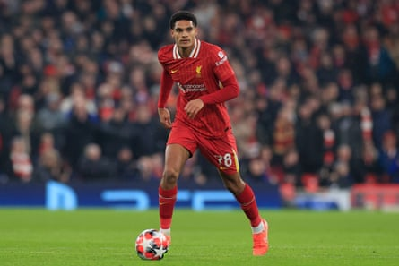

Jarell Quansah has completed his move from Liverpool to Bayer Leverkusen in a deal worth up to £35m.
The 22-year-old enjoyed an impressive European Under-21 Championship campaign as part of Lee Carsley’s triumphant England side but found opportunities limited at club level under Arne Slot last season. The homegrown central defender started four Premier League games, 13 in all competitions, as Virgil van Dijk and Ibrahima Konaté established a title-winning partnership.
Liverpool will receive a guaranteed £30m for Quansah plus £5m in add-ons. The deal is the third between the clubs this summer, following the Premier League champions’ acquisition of Jeremie Frimpong and record-signing Florian Wirtz .
Quansah is highly thought of at Liverpool but only made four starts in the Premier League for the champions last season.Photograph: Conor Molloy/ProSports/Shutterstock
Despite selling the young defender, who made his debut in 2023 and signed a new long-term contract at Anfield in October, Liverpool consider Quansah a player of rich potential and have negotiated a pre-agreed buy-back clause in the deal with Leverkusen. “Everybody at LFC would like to thank Jarell for his contributions and wish him the very best for the future,” read a statement from the club.
Liverpool could strengthen their central defensive options for next season with a move for Crystal Palace captain Marc Guéhi. The 24-year-old is a target for the champions but Palace will need to reduce their £65m asking price for a defender who has only a year remaining on his contract for Liverpool to secure his services.
Meanwhile, Jarrad Branthwaite has credited Everton’s new ambition under David Moyes as a key factor in his decision to sign a five-year contract with the club.
The 23-year-old defender, Everton’s young player of the year for the past two seasons, has given Moyes’ rebuilding plans a significant boost by committing his future to the club until 2030. Everton had previously resisted interest from Manchester United in the Carlisle-born defender, who would have been part of England’s victorious European U21 Championship squad but for a hamstring injury sustained at the end of last season.
Chelsea have also been linked with Branthwaite this summer but the defender insisted it was “an easy decision” to commit his future to Everton. He cited Moyes and the club’s new direction under the ownership of The Friedkin Group as key influences. “I’ve been at Everton for five-and-a-half years now and I’ve seen the change the club’s had over the past six months,” Branthwaite said. “It’s very exciting for us as a team, as players, to have that going on in the background and obviously to be starting the new season at the new stadium. The ambition was a huge thing.
“The way the manager wants us to go as a team and what he wants us to do for next season and where he wants us to challenge for has had a big impact on the decision. I think you saw towards the end of last season as a team what we can do. The manager has been really good, not only for me but for the group. You saw the change in results, the change in mood since he came in. He drives the demands every day to be better.”
Speaking of Branthwaite’s new deal, Moyes said: “He is still only 23 and his best years are hopefully still ahead of him. We believe he can have a huge role to play in an exciting new era at the football club.”
Everton remain in talks with Villarreal over their France Under-21 international striker Thierno Barry. The 22-year-old, who scored 11 goals in La Liga last season, has a release clause of €40m but Everton are attempting to negotiate a lower fee.
Michael Keane, who is now officially out of contract, has been offered a new deal by Everton and is expected to stay.